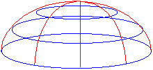
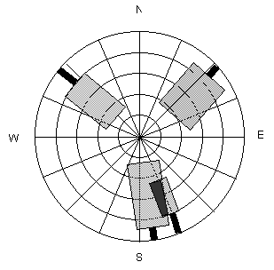
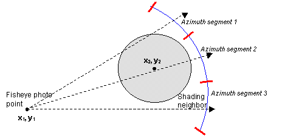
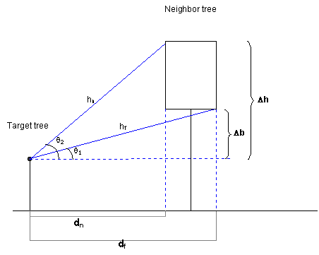
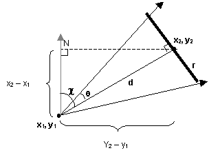
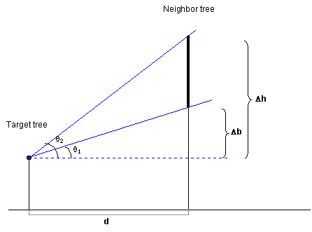

This section describes the basis for SORTIE's light calculations in enough detail that you could duplicate them by hand (which is needed sometimes for testing!). This section assumes that you have read the user manual section on light and have a basic understanding of how it works. This will build on that information.
This section contains a lot of math. I have not been super-great about keeping all the variable names unique. Each set of equations explains what each variable is and I don't think there should be problems with ambiguity.
The goal of the light submodel is to calculate how much light a particular point receives. It does this by searching for nearby trees that could cast shade on the target point and then figuring how much of the total light they block. The position of the shading trees is important; light does not come equally from all parts of the sky.
Remember also that SORTIE uses two methods for calculating light - traditional light and sail light. These methods are only slightly different.
In order to keep track of the different areas of the sky, SORTIE divides it into a hemispherical grid, which looks like this:
The blue lines divide the sky into altitude sections; the red lines into azimuth sections. In traditional light, the user controls how many azimuth and altitude divisions there are. Azimuth is divided into equal-angle pieces, while altitude is divided into pieces of equal sine of the altitude angle. In sail light, both altitude and azimuth are automatically divided into one-degree pieces. The user control over the traditional light sky grid divisions was introduced in the early days when CPU cycles were more precious. More grid divisions meant finer resolution and more accurate GLIs, but longer calculation times. The user could find their own acceptable tradeoff point. Sail light, introduced later, didn't bother with this. The future of the light model is probably convergence on the sail light calculation methods - with some other possibilities discussed later.
SORTIE keeps track of where light comes from in the sky with the sky brightness array. Sail light and traditional light each have their own brightness array, which are calculated separately. The arrays are conceptually two-dimensional - altitude by azimuth, grid-style. The sail light brightness array uses two array indexes and traditional light uses only one, but the effect is the same. (Incidentally, there is no reason why traditional light needs to use only one array index. That's just the way it was originally written.)
Each array bucket holds the amount of light coming from one sky grid cell. These light values are relativized, which means that each value is represented as a fraction of the total light. The light calculations are made and the arrays are filled when a parameter file is loaded.
The same calculations are used to fill both sky brightness arrays. SORTIE performs the calculations separately for each array, though, because the arrays grid the sky into different resolutions.
The light calculations consist of two parts: finding the amount of direct beam radiation and the amount of diffuse radiation. Direct beam radiation is the hard part. To find this, SORTIE loops through each day in the growing season (the length of which is determined by the user) and calculates in which sky grid cell the sun is every five minutes for the traditional light array and every minute for the sail light array.
The direct beam radiation calculations are all straight from Iqbal 1983 (citation in the user manual), with the exception of the beam radiation equation that I didn't get to fully derive. However, I verified with Charlie Canham that it was right.
We are working here with solar time, not regular time. Solar time is expressed in angles. Noon is zero, the morning is positive, and the afternoon is negative. Five minutes of solar time works out to 0.021816615 radians, so we work out the solar time of sunrise, then subtract five minutes or one minute at a time until we get to noon (zero). Since the solar position is symmetrical between morning and afternoon, we can just take the values we calculated for the morning's positions in the east and mirror-image map them onto afternoon's positions in the west.
Sometimes this topic will refer to altitude angle, and sometimes zenith angle. They both refer to the vertical component of the sun's position. The zenith is directly overhead. The zenith angle is the distance from the zenith, while the altitude angle is the distance from the horizon. The sun's zenith angle plus its altitude angle equals 90 degrees (or p/2 radians). (And speaking of degrees and radians, keep in mind that the C++ trig functions take values in radians, which means that the code has to convert back and forth a lot.)
To calculate the sun's position in the sky and put it in the brightness array, you need to know its azimuth and altitude angles. At a given (solar) time, the sun's zenith angle is calculated by:
and its azimuth angle is calculated by:
where:
Azimuth here is south zero, east positive. The SORTIE azimuth system is north zero, east positive, so we have to convert. If old azimuth is less than 180 degrees, convert by subtracting its value from 180. If old azimuth is more than 180 degrees, convert by subtracting its value from 540 (3 pi).
Solar declination is calculated by
where δ = solar declination in radians and Γ is the day angle, in radians.
The day angle is calculated by Γ = 2π(d - 1)/365 where Γ is the day angle in radians and d is the Julian day number (day of the year between 1 and 365).
So, once we finally have the azimuth and altitude angles for the sun's position in the sky, we can calculate the amount of direct beam radiation coming from it and add it to the appropriate grid cell. The direct beam radiation equation is
where
Eccentricity is calculated by
where Γ is the day angle (equation above).
For the optical mass of the atmosphere, SORTIE uses a numerical approximation method. At five degrees of altitude or less, m = 10.39. Between five and 15 degrees, m = 5.6. Between 15 and 25 degrees, m = 2.9. Above that m = cos(θ).
Once the growing season sun position calculations are finished, the direct beam radiation is added up. The relative amounts of diffuse and direct beam radiation are set by the user, so the total direct beam radiation can be used to calculate the total amount of diffuse radiation. This diffuse radiation is then spread equally across the sky.
There is a minimum altitude angle at which the sun is visible, which is set by the user. Below this angle, SORTIE blacks out the sky brightness array. The rest of the array is relativized.
SORTIE simulates taking a fisheye photograph to find the light level at a particular point, which is how light is determined empirically in the field. A fisheye photograph captures a complete hemisphere over a point. Imagine lying on your back on the ground in a forest and looking up. You might see something like this (at least, if you were in a SORTIE-style virtual forest!):
This SORTIE-esque fisheye photo simulation shows four trees, two of which overlap. A sky grid is shown behind the trees. Tree canopies are approximated as cylinders in traditional light and as rectangles in sail light. (The trunks are included so the figure doesn't look completely bizarre, but in fact, SORTIE ignores the trunks.) Each tree blocks a number of chunks of sky, but allows some light through. The fraction of light that a tree canopy transmits is the light extinction coefficient, which is set by the user for each species. If tree canopies overlap, they each block a fraction of the light (the black area where the two trees intersect in the figure)
In SORTIE, the fisheye photograph for each light calculation method is represented as an array with the same dimensions as that method's sky brightness array. Each bucket in the array corresponds to a sky grid segment, just like the sky brightness array. The values in the photo array range from 0 (all light from that sky segment blocked) to 1 (no light from that sky segment blocked). Light extinction coefficients are expressed as a fraction of light transmitted, as a value from 0 to 1; when applied to a sky segment, they are multiplied by the value currently in that array bucket. As an example: a certain sky segment starts out with a value of 1. SORTIE finds two neighbors that block it, one with a light extinction coefficient of 0.5 and another with a light extinction coefficient of 0.2. The array bucket value ends up as 0.5 * 0.2, or 0.1.
SORTIE begins by calculating a maximum search radius, which it does by taking the tallest possible tree (user-set, maximum canopy height) and then determining the farthest distance away that it could be and still cast shade. (See diagrams below for how that relationship would be worked out.) This maximum search radius is where the top of this hypothetical tallest tree just pokes above the minimum solar angle (below which the sky is dark). If this angle is set too low then the search radius will become ridiculously large, and possibly even wrap around the plot.
SORTIE searches within this maximum radius for trees taller than the target height of the fisheye photo. Any taller tree that it finds will be added to the fisheye photo, assuming it sticks up above the minimum solar angle. For each tree found, SORTIE determines what portion of the sky it covers by working out how many sky-segments wide it is (azimuth) and how many tall (altitude). Shading is binary; a tree either blocks a segment or doesn't. If a tree covers the center of a chunk, it blocks it.
When determining the azimuth, SORTIE takes a two-dimensional projection of the tree and its neighbor on the forest floor. It starts by figuring out the azimuth to the center of the neighbor tree, so it knows which sky grid cells to check for blockage. Then for each grid cell it's going to check, it projects a line out from the fisheye photo point to the center of the azimuth segment to see if this line intercepts the neighbor's canopy. If it does, the neighbor shades that segment.
In this diagram, there are three azimuth segments shown. The shading neighbor is blocking segments 1 and 2.
To determine whether or not the circle of the neighbor's canopy intersects a line to an azimuth segment, SORTIE solves the circle-and-line system of two equations. The equation for a line is
where m is the slope of the line and b is the intercept. The equation for a circle is
where r is the circle radius and the circle center is at point (h, k). In the figure above, the target tree is at (x1, y1) and the neighbor tree is at (x2, y2).
To simplify the problem, SORTIE puts the two trees in their own relative coordinate system, where the target tree is at (0, 0) and the neighbor is at (p, q). Now, in the two equations just given, b = 0, h = p, and k = q. In addition, p = x2 - x1 and q = y2 - y1. SORTIE has already pre-calculated the slope, m, to the center of each of the azimuth segments (since they are basically infinitely far away, the slope to them is the same everywhere). So now the equations become
and
Now substitute for y in the second equation, which gives:
Simplifying the equation and putting it into quadratic form, we get:
An equation in the quadratic form (ax2 + bx + c = 0) has two solutions, which can be found using the quadratic formula:
For our line-and-circle system of equations,
At this point, though, all SORTIE cares about is whether solutions exist, not what they are (i.e. yes the line and circle intersect, or no they don't). So SORTIE plugs in m, p, q, and r into the a, b, and c equations to see if b2 - 4ac > 0 and thus has a real square root. If it does, the line and circle intersect; if it doesn't, they don't.
It is possible to solve this problem another way using trigonometry (see the sail light calculation), but it was written this way originally to avoid using the trig functions in C, which are slow compared with simple arithmetic operations.
To determine the altitude, SORTIE again makes the geometry into a two-dimensional problem along the plane of the line projecting from the fisheye photo to the azimuth segment. In this case the arrangement looks like this:
Δb is the difference between the height of the fisheye photo and the base of the neighbor crown; Δh is the difference between the height of the fisheye photo and the top of the neighbor crown; dn is the difference between the target tree trunk and the nearest edge of the neighbor crown; df is the difference between the target tree trunk and the farthest edge of the neighbor crown. SORTIE needs to solve for sin(θ1) and sin(θ2) (remember that the altitude is in equal increments of sin(alt)).
To find dn and df, SORTIE finishes solving the line-and-circle system of equations for the two x solutions - call them x3 and x4. These are plugged into the "y = mx" equation to get the y values - call them y3 and y4. The distance from (0, 0) (in our relative coordinate system, the position of the fisheye photo) to (x3, y3) is dn; from (0, 0) to (x4, y4) is df. So
Once SORTIE knows how many azimuth chunks wide a tree is and how many altitude chunks tall, it can be added to the fisheye photo array. For each sky segment covered by the tree in the array, SORTIE takes the value in that array bucket and multiplies it by the light extinction coefficient for the shading tree's species.
Once all shading trees have been added to the photo array, the GLI is calculated. Each bucket in the photo array is multiplied by its corresponding bucket in the sky brightness array. The results are added together and multiplied by 100 to give a percentage of full sun.
As with traditional light, there is a sail light photo array (with the same dimensions as the sail light brightness array) and shading neighbors are added to it. While the basic concept is the same, the calculations are performed in a slightly different way. SORTIE also uses a maximum search radius for sail light, but this one is user-set and does not need to be calculated.
To find out how many azimuth sky segments wide a shading tree is, SORTIE uses trig instead of linear algebra. To demonstrate these relationships, we'll tweak the azimuth diagram a bit.
In this figure, the fisheye photo is being taken at point (x1, y1). The center of the shading neighbor tree is at (x2, y2). The radius of the neighbor's crown is r; d is the distance between the photo and the center of the neighbor; θ is the angle subtended by half of the neighbor's crown; and χ is the azimuth angle between the photo and the neighbor. (Remember that azimuth is north zero, east positive, and that the X axis increases to the north and Y to the east.)
Once these relationships are figured, SORTIE then knows that the azimuth sky segments blocked are χ plus and minus θ degrees (remember that the sail light sky brightness array is divided into one-degree increments).
To figure the altitude also requires a slight adjustment to the diagram shown for sail light. Since sail light neighbor tree canopies are approximated as two-dimensional sails instead of as cylinders, the angle calculations are slightly different.
Now, we're solving for θ 1 and θ 2. d is the same as in the azimuth calculation.
The light extinction coefficients are applied to the sail light photo array in the same way as traditional light.
Instead of a GLI, the sail light method returns a fraction of shade, as a value between 0 (no shade, all light transmitted) and 1 (no light transmitted). As with calculating the GLI, each bucket of the photo array is multiplied by the corresponding bucket in the sky brightness array and added together. Then the shade value is 1 minus that total.
In the traditional light calculation, the C++ trig functions were avoided as being too slow. However, with sail light it is more efficient because the sky grid increments are so small. Having to repeat the linear algebra calculations many times for each one-degree increment for a large neighbor versus having to do one trig calculation levels the playing field here. However, it must be admitted that time trials were never done. Informal time trials suggest that a good approach for both methods in the future is to pre-calculate the tangents of the altitude and azimuth divisions and hold them in an array to compare to the tangents of the calculated altitude and azimuth angles. This was faster than either method above.